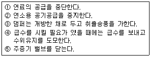
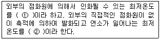
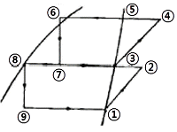
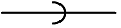
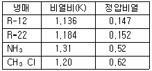
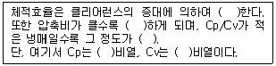

공조냉동기계기능사 (2005-10-02 기출문제)
1과목: 공조냉동안전관리
1. 방진마스크의 구비조건이다. 틀린 것은?
- 중량이 가벼울 것
- 흡입배기 저항이 클 것
- 시야가 넓을 것
- 여과효율이 좋을 것
(정답률: 75%)

2. 소화작업에 대한 설명 중 틀린 것은?
- 화재 시에는 가스밸브를 닫고 전기 스위치를 끈다.
- 화재가 발생하면 화재경보를 한다.
- 전기배선시설 수리 시는 전기가 통하는지 여부를 확인한다.
- 유류 및 카바이트에 붙은 불은 물로 끄는 것이 좋다.
(정답률: 84%)
3. 아크용접 작업시 주의사항으로 옳지 않은 것은?
- 눈과 피부를 노출시키지 말 것
- 슬래그 제거 시는 보안경을 쓸 것
- 습기 있는 보호구는 착용하지 말 것
- 가열된 홀더는 물에 넣어 냉각 할 것
(정답률: 85%)
4. 보일러 사용 중에 돌연히 비상사태가 발생해서 긴급하게 운전정지를 하지 않으면 안 된다고 판단했을 때의 순서로 맞는 것은?

- ①-②-③-④-⑤
- ①-②-④-③-⑤
- ①-②-④-⑤-③
- ①-⑤-②-③-④
(정답률: 39%)
5. 다음 연삭 작업의 안전수칙에 맞지 않는 것은?
- 작업도중 진동이나 마찰면에서의 팔열이 심하면 작업을 중지한다.
- 숫돌차에 편심이 생기거나 원주면의 메짐이 심하면 드레싱을 한다.
- 작업 시에는 반드시 정면에 서서 작업한다.
- 축과 구멍에는 틈새가 없어야 한다.
(정답률: 74%)
6. 용기의 재검사기간의 설명이 바른 것은?
- 용기의 경과 연수가 15년 미만이며, 500ℓ 이상인 용접용기는 7년
- 용기의 경과 연수가 15년 미만이며, 500ℓ 미만인 용접용기는 5년
- 용기의 경과 연수가 15년 이상에서 20년 미만이며, 500ℓ이상인 용접용기는 3년
- 용기의 경과 연수가 20년 이상이며, 500ℓ 이상인 용접용기는 1년
(정답률: 37%)
7. 냉동장치에서 냉매가 적정량보다 많이 부족한 것을 발견하였다. 이때 제일 먼저 확인해야 할 작업은?
- 누설 장소를 찾고 수리한다.
- 냉매의 종류를 확인한다.
- 펌프다운 시킨다.
- 냉매를 충전한다.
(정답률: 60%)
8. 다음 보기의 빈칸에 알맞은 말로 연결된 것은?

- ① 누전, ② 지락
- ① 지락, ② 누전
- ① 인화점, ② 발화점
- ① 발화점, ② 인화점
(정답률: 80%)
9. 압력용기 내의 압력이 제한압력을 넘었을 때 열려서 파손을 방지하는 밸브는?
- 안전 밸브
- 첵 밸브
- 스톱 밸브
- 게이트 밸브
(정답률: 79%)
10. 정신적 또는 육체적 활동의 부산물로 체내에 누적되어 활동능력을 둔화시킴으로서 사고원인이 되기 쉬운 것은?
- 근심걱정
- 주의 집중
- 피로
- 공상
(정답률: 90%)
11. 해머 작업시 보안경을 꼭 서야 할 경우에 해당되는 작업방향은?
- 위쪽방향
- 아래쪽 방향
- 왼쪽방향
- 오른쪽 방향
(정답률: 74%)
12. 감전되거나 전기화상을 입을 위험이 있는 작업에 있어서는 무엇을 사용하여야 하는가?
- 보호구
- 구급용구
- 신호기
- 구명구
(정답률: 81%)
13. 공구의 안전한 취급방법이 아닌 것은?
- 손잡이에 묻은 기름, 그리스 등을 닦아낸다.
- 측정공구는 부드러운 헝겊위에 올려놓는다.
- 높은 곳에서 작업시 간단한 공구는 던져서 신속하게 전달한다.
- 날카로운 공구는 공구함에 넣어서 운반한다.
(정답률: 89%)
14. 방호장치의 기본목적이 아닌 것은?
- 작업자의 보호
- 인적, 물적 손실의 방지
- 기계기능의 향상
- 기계 위험 부위의 접촉방지
(정답률: 85%)
15. 수공구에 의한 재해를 막는 내용 중 틀린 것은?
- 결함이 없는 공구를 사용할 것
- 외관이 좋은 공구만 사용할 것
- 작업에 올바른 공구만 취급할 것
- 공구는 안전한 장소에 둘 것
(정답률: 92%)
2과목: 냉동기계
16. 공비혼합냉매에 대한 설명으로 틀린 것은?
- 서로 다른 냉매를 혼합하여 결점을 보완한 좋은 냉매로 만든다.
- 적당한 비율로 혼합하여 비등점이 일치하는 혼합냉매로 만든다.
- 공비혼합냉매를 사용하면 응축압력을 감소시킬 수 있다.
- 공비혼합냉매는 혼합된 후 각각 서로 다른 특성을 지니게 된다.
(정답률: 68%)
17. 온도가 일정할 때 가스압력과 체적은 어떤 관계가 있는가?
- 체적은 압력에 반비례한다.
- 체적은 압력에 비례한다.
- 체적은 압력과 무관하다.
- 체적은 압력과 제곱 비례한다.
(정답률: 44%)
18. 다음 중 반도체를 이용하는 냉동기는?
- 흡수식 냉동기
- 전자식 냉동기
- 증기분사식 냉동기
- 스크류식 냉동기
(정답률: 81%)
19. 25℃의 순수한 물 50㎏을 10분 동안에 0℃까지 냉각하려 할 때, 최저 몇 냉동톤의 냉동기를 써야 하는가? (단, 손실은 흡수 열량의 25%이고, 냉동톤은 한국 냉동톤으로 한다.)
- 1.53 냉동톤
- 1.98 냉동톤
- 2.82 냉동톤
- 3.13 냉동톤
(정답률: 30%)
20. 관접합부의 수밀, 기밀유지와 기계적 성질 향상, 작업공정 감소의 효과를 얻을 수 있는 접합법은?
- 용접 접합
- 플랜지 접합
- 리벳 접합
- 소켓 접합
(정답률: 58%)
21. 다음 중 냉동장치에 관한 설명이 옳지 않은 것은?
- 안전밸브가 작동하기 전에 고압차단 스위치가 작동하도록 조정한다.
- 온도식 자동 팽창변의 감온통은 증발기의 입구측에 붙인다.
- 가용전은 응축기의 보호를 위하여 사용한다.
- 파열판은 주로 터보 냉동기의 저압측에 사용한다.
(정답률: 52%)
22. 다음 중 압축기 보호를 위한 장치가 아닌 것은?
- 가용전
- 안전헤드
- 안전밸브
- 유압보호 스위치
(정답률: 50%)
23. 액순환식 증발기에 대한 설명 중 알 맞는 것은?
- 증발기가 여러 대가 되면 팽창밸브도 여러 개가 된다.
- 전열을 양호하게 하기 위하여 공랭식에 주로 사용된다.
- 증발기출구에서 액이 80% 정도이고 기체가 20% 정도 차지한다.
- 다른 증발기에 비해 전열작용이 50%정도 양호하다.
(정답률: 76%)
24. 다음의 도표는 2단 압축 냉동사이클을 몰리엘 선도로서 표시한 것이다. 맞는 것은?

- 중간냉각기의 냉동효과 : ③~⑦
- 증발기의 냉동효과 : ②~⑨
- 팽창변 통과직후의 냉매위치 : ⑦~⑨
- 응축기의 방출열량 : ⑧~②
(정답률: 67%)
25. 입형 단동 압축기로 직경 200mm, 행정 200mm, 회전수 450rpm, 실린더수 2개의 피스톤 배제량은 얼마인가?
- 약 33.92m3/h
- 약 339.29m3/h
- 약 539.75m3/h
- 약 3397.9m3/h
(정답률: 34%)
26. 배관의 중량을 천정이나 기타 위에서 매다는 방법으로 배관을 지지하는 장치는?
- 서포오트(Support)
- 앵커(Anchor)
- 행거(Hanger)
- 브레이스(Brace)
(정답률: 79%)
27. 시퀀스 제어에 속하지 않는 것은?
- 자동 전기밥솥
- 전기세탁기
- 가정용 전기냉장고
- 네온 싸인
(정답률: 76%)
28. 다음 냉매가스 중 표준 냉동 사이클에서 냉동효과가 가장 큰 냉매 가스는?
- 프레온 11
- 프레온 13
- 프레온 22
- 암모니아
(정답률: 59%)
29. 다음 나사 패킹제 중 냉매배관에 많이 사용하며 빨리 굳어 페인트에 조금씩 섞어서 사용하는 것은?
- 광명단(Super heat)
- 액상합성수지
- 페인트
- 일산화연
(정답률: 49%)
30. 냉매의 특성 중 틀린 것은?
- 냉동톤당 소요동력은 증발온도, 응축온도가 변하여도 일정하다.
- 압축비가 클수록 냉매 단위 중량당의 압축열이 커진다.
- 냉매 특성상 동일 냉동능력에 대한 소요동력은 적은 것이 좋다.
- 압축기 흡입가스가 과열하였을 때 NH3는 체적효율이 감소한다.
(정답률: 50%)
31. 압축기 클리어런스 값이 크면 어떤 영향이 있는가?
- 냉동능력이 증대된다.
- 토출가스 온도는 변화 없다.
- 체적효율이 증대한다.
- 윤활유가 열화 되기 쉽다.
(정답률: 60%)
32. 냉매 중 암모니아(NH3)에 대한 설명으로 올바르지 않은 것은?
- 누설검지기 쉽다.
- 가격이 비싼 편이다.
- 임계온도, 응고온도 등이 적당하다.
- 가장 오랫동안 사용되어온 냉매로 대규모 냉동장치에 널리 사용되고 있다.
(정답률: 69%)
33. 비체적이란 어떤 것인가?
- 어느 물체의 체적이다.
- 단위 체적당 중량이다.
- 단위 체적당 엔탈피이다.
- 단위 중량당 체적이다.
(정답률: 58%)
34. 저단측 토출가스의 온도를 냉각시켜 고단측 압축기가 과열되는 것을 방지하는 것은?
- 부스터
- 인터 쿨러
- 콤파운드 압축기
- 익스팬션탱크
(정답률: 78%)
35. 다음 그림이 나타내는 관의 결합방식으로 적당한 것은?

- 용접식
- 플랜지식
- 소켓식
- 유니언식
(정답률: 80%)
36. 터보냉동기 윤활 사이클에서 마그네틱 플러그(MAGNETIC PLUG)가 하는 역할은?
- 오일 쿨러의 냉각수 온도를 일정하게 유지하는 역할
- 오일 중의 수분을 제거하는 역할
- 윤활 사이클로 공급되는 유압을 일정하게 하여주는 역할
- 윤활 사이클로 공급되는 철분을 제거하여 장치의 마모를 방지하는 역할
(정답률: 71%)
37. 다음 냉동장치의 제어장치 중 온도제어장치에 해당되는 것은?
- E.P.R
- T.C
- L.P.S
- O.P.S
(정답률: 75%)
38. 제빙공장에서 냉동기를 가동하여 30℃의 물 1ton을 24시간 동안에 -9℃얼음으로 만들고자 한다. 이 때 필요한 열량은 얼마인가? (단, 외부로부터 열침입은 전혀 없는 것으로 하고, 물의 응고잠열은 80kcal/kg으로 한다.)
- 420kcal/h
- 4,770kcal/h
- 9,540kcal/h
- 11,000kcal/h
(정답률: 47%)
39. 소구경 강관을 조립할 대 또는 막혔을 때 쉽게 수리하기 위하여 사용하는 연결 부속은 어느 것인가?
- 니플
- 유니언
- 캡
- 엘보우
(정답률: 67%)
40. 압축 후 온도가 너무 높으면 실린더헤드를 냉각할 필요가 있다. 다음 표를 참고하여 압축 후 냉매의 온도가 가장 높은 냉매는? (단, 모든 냉매는 같은 조건으로 압축함)

- R-12
- R-22
- NH3
- CH3Cl
(정답률: 67%)
41. 압축기가 1대일 경우 고압차단스위치(HPS)의 압력인출위치는 어디가 좋은가?
- 토출스톱밸브 직후
- 토출밸브 직전
- 토출밸브 직후와 토출밸브 직전 사이
- 고압부 어디라도 관계없다.
(정답률: 40%)
42. 증발식 응축기에 대한 설명 중 옳지 않는 것은?
- 암모니아(NH3)장치에 주로 사용된다.
- 물의 증발열을 이용한다.
- 냉각탑을 사용하는 것보다 응축압력이 높다.
- 소비 냉각수의 양이 적다.
(정답률: 38%)
43. 네온사인, 세탁기 등 미리 정해 놓은 순서에 따라 제어의 각 단계를 순차적으로 행하는 제어를 무엇이라 하는가?
- 공정제어
- 비공정제어
- 시퀀스제어
- 되먹임제어
(정답률: 87%)
44. 다음 보기의 괄호 안에 알맞은 말이 순서대로 맞게 짝지어진 것은?

- 감소, 감소, 크다, 정압, 정적
- 증가, 감소, 적다, 정압, 정적
- 감소, 증가, 크다, 정압, 정적
- 증가, 증가, 적다, 정압, 정적
(정답률: 48%)
45. 캐비테이션 방지책으로 잘못 서술하고 있는 것은?
- 단흡입을 양흡입으로 바꾼다.
- 수직측 펌프를 사용하고 회전차를 수중에 완전히 잠기게 한다.
- 펌프의 설치 위치를 낮춘다.
- 펌프 회전수를 빠르게 한다.
(정답률: 70%)
3과목: 공기조화
46. 다음 설명 중 중앙식 공기조화 방색에 대한 공통적인 특징으로 적당한 것은?
- 실내에는 취출구와 흡입구를 설치하면 되고, 팬코일 유닛과 같은 기구가 노출되지 않는다.
- 큰 부하를 가진 방에 대해서도 덕트가 적게 되고, 덕트 스페이스가 적다.
- 취급이 간단하고 대형의 것도 누구든지 운전할 수 있다.
- 대규모 건물에 채용하면 설비비가 절감되고, 보수관리가 편리하다.
(정답률: 48%)
47. 공기조화용 덕트 부속기기의 댐퍼종류에서 주로 소형덕트의 개폐용으로 사용되며 구조가 간단하고 완전히 닫았을 때 공기의 누설이 적으나 운전 중 개폐 조작에 큰 힘을 필요로 하며 날개가 중간정도 열렸을 때 와류가 생겨 유량조절용으로 부적당한 댐퍼는?
- 버터플라이 댐퍼
- 평행익형 댐퍼
- 대향익형 댐퍼
- 스프릿 댐퍼
(정답률: 66%)
48. 난방부하에 포함되지 않는 것은?
- 벽체를 통한 부하
- 외기부하
- 틈새부하
- 인체 발생부하
(정답률: 59%)
49. 공기조화의 목적에 대한 기술로서 옳은 것은?
- 공기의 정화와 온도만을 조절하는 설비이다.
- 공기의 정화와 기류 및 음향을 조절한다.
- 공기의 온도와 습도만을 조절하는 설비이다.
- 공기의 정화와 온도, 습도 및 기류를 조절한다.
(정답률: 87%)
50. 다음 중 냉각코일을 결정하는 부하가 아닌 것은?
- 실내취득열량
- 외기부하
- 펌프배관부하
- 기기 내 취득열량
(정답률: 43%)
51. 공기조화기에서 외면을 단열 시공하는 이유가 아닌 것은?
- 외부로부터의 열침입 방지
- 외부로부터의 소음차단
- 외부로부터의 습기차단
- 외부로부터의 충격차단
(정답률: 49%)
52. 다음 중 잠열부하를 제거하는 경우 변화하지 않는 상태량은?
- 상대습도
- 비체적
- 절대습도
- 건구온도
(정답률: 29%)
53. 공기조화설비 중에서 열원장치의 구성요소로 적당하지 않는 것은?
- 냉각탑
- 냉동기
- 보일러
- 덕트
(정답률: 72%)
54. 난방효율이 가장 좋은 난방 방식은?
- 온수난방
- 열펌프 난방
- 온풍난방
- 복사난방
(정답률: 29%)
55. 원심 송풍기의 번호가 No 2일 때 깃의 지름은 얼마인가? (단, 단위는 ㎜)
- 150
- 200
- 250
- 300
(정답률: 45%)
56. 보일러에서 발생한 증기가 증기의 공급관 속을 흐르는 것은 보일러에서 방열기까지의 무엇에 의하여 순환되는가?
- 압력차
- 온도차
- 속도차
- 밀도차
(정답률: 61%)
57. 1차 공조기로부터 보내온 고속공기가 노즐 속을 통과 할 때의 유인력에 의하여 2차 공기를 유인하여 냉각 또는 가열하는 방식을 무엇이라고 하는가?
- 패키지 방식
- 유인 유닛 방식
- FCU 방식
- 바이패스 방식
(정답률: 85%)
58. 온수난방장치의 체적이 700ℓ이다. 이 경우 개방식 팽창탱크의 필요 체적은 약 몇 ℓ인가?(단, 초기수온은 5℃, 보일러 운전시 수온을 80℃로 하고 각각의 온도에 대한 물의 밀도는 0.99999kg/ℓ 및 0.97183kg/ℓ로 하며, 개방식 팽창탱크의 용량은 온수팽창탱크의 2배로 한다.
- 40.5
- 41.2
- 43.5
- 45.7
(정답률: 15%)
59. 외기냉방이 불가능한 공기조화 방식은?
- 정풍량 단일덕트방식
- 변풍량 단일덕트방식
- 팬코일유니트방식
- 각층유니트방식
(정답률: 41%)
60. 다음 공기의 상태를 표시하는 용어들 중에서 단위표시가 틀린 것은?
- 상대습도 : %
- 엔탈피 : kcal/m3℃
- 절대습도 : kg/kg
- 수증기 분압 : ㎜Hg
(정답률: 39%)
흡입배기 저항이란 마스크를 착용한 상태에서 공기를 흡입할 때 발생하는 저항을 의미합니다. 이 저항이 클수록 호흡이 어려워지고 불편함을 느끼게 됩니다. 따라서 방진마스크는 흡입배기 저항이 낮을수록 좋습니다.
그 외에는 중량이 가벼울 것, 시야가 넓을 것, 여과효율이 좋을 것 등이 방진마스크의 구비조건으로 제시됩니다.